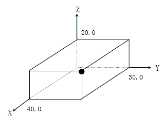
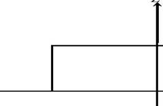
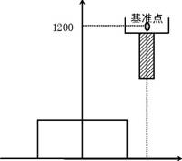

| 坐标系 |
数控机床工作时，刀具应达到的位置要告诉CNC，然后CNC控制刀具移动到这个位置。而这个应该到达的位置可用某坐标系的坐标值给出。如果编程的轴是X，Y，Z 三个轴的话, 则坐标值如下:
Z

| 零件坐标系的设定(G92) |
加工零件使用的坐标系称为零件坐标系。零件坐标系可用下述方法设定。利用程序指令G92和其后面的数值来确立零件坐标系。
零件坐标系的设定
G92 IP__
利用上述指令就设定了零件坐标系，在这个坐标系中刀具现在位置的某点，例如刀尖的坐标值为IP。一旦确定了坐标以后，绝对值指令的位置就是这个坐标系中的坐标值。
Z
刀具

如图所示，以刀尖作为程序的
23.0
起刀点，在程序开始指令G92
X
25.3
G92 X25.3 Z23.0 ;
Z

自动设定坐标系
如果选择了坐标系自动设定(参数№.012的APRS)，则手动返回参考点后，坐标系便自动设定。如α、β、γ分别为参数№.076～078的值，则返回参考点时，刀柄上某一基准点或者基本刀具的刀尖位置的坐标值为X=α,Y=β,Z=γ，这样就设定了零件的坐标系。当然，自动设定的坐标系与在参考点执行下面指令设定是等效的:
G92 Xα Yβ Zγ ；
7.2 平面选择(G17, G18, G19)
用 G代码选择圆弧插补的平面和刀具半径补偿的平面。
G17XY平面
G18ZX平面
G19YZ平面
G17，G18，G19在没指令的程序段里, 平面不发生变化。(例)G18 X_ Z_ ； ZX平面X_ Y_ ； 平面不变(ZX平面) 另外，移动指令与平面选择无关。
例如，在下面这条指令情况下，Z 轴不存在XY平面上，Z轴移动与 XY平面无关。G17 Z_ ；